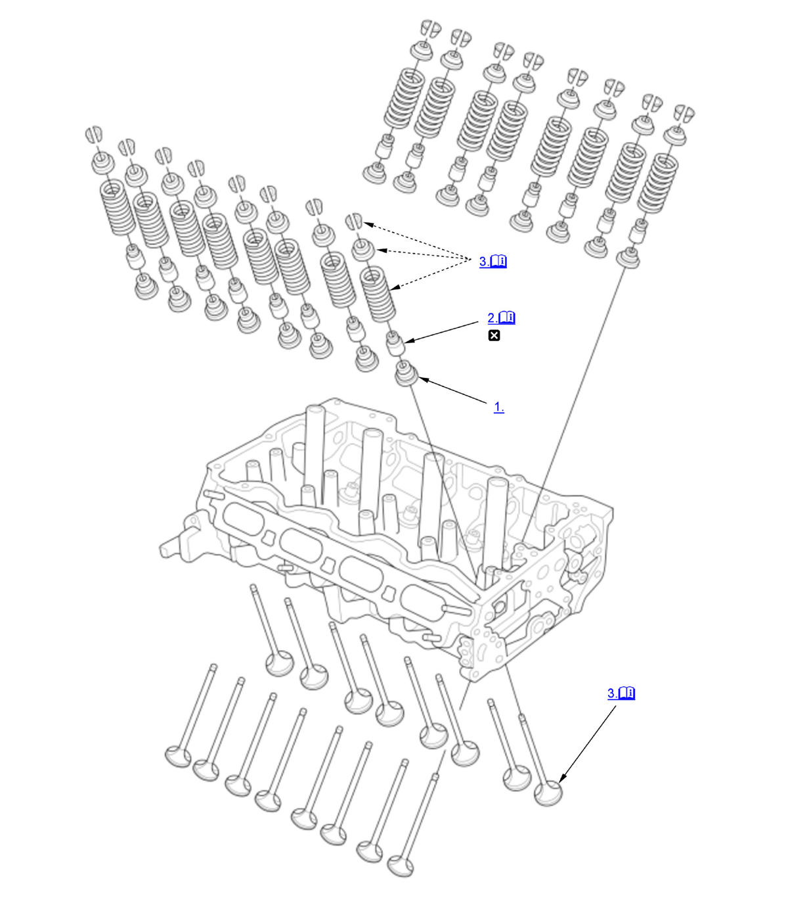

Valve, Spring, and Valve Seal Removal and Installation (K20C1) (2017 2018 2019 2020 2021): Installation: Procedure
NOTE:
Numbered call-outs in figure pertain to list numbers in following procedure.

Courtesy of HONDA, U.S.A., INC. |
Detailed information, notes, and precautions |
 |
Replace |
- Valve Spring Seat - Install
- Valve Seal - Install
1. Install the valve seals (A) using the 5.5 mm side of the stem seal driver.
NOTE: The exhaust valve seal (B) has a black spring (C), and the intake valve seal (D) has a white or silver spring (E), they are not interchangeable. - Valve and Valve Spring - Install
1. Coat the valve stems with new engine oil. 2. Install the valves in the valve guides.
3. Check that the valves move up and down smoothly.
4. Install the valve spring and the spring retainer. Place the end of the valve spring with the closely wound coils toward the cylinder head. 5. Install the valve spring compressor and the valve spring compressor attachment.
6. Compress the valve spring and install the valve cotters.
7. Remove the valve spring compressor and the valve spring compressor attachment.
8. Lightly tap the end of each valve stem two or three times with a plastic mallet (A) to ensure proper seating of the valve and the valve cotters. Tap the valve stem only along its axis so you do not bend the stem.
NOTE: Be sure to raise the head off the work bench so the valve is not possibly damaged. - Cylinder Head - Install